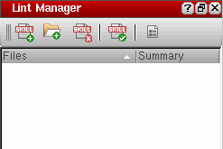
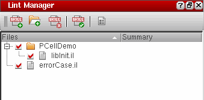

Setting Up Files/Directories for the Lint Checker
The Lint Manager assistant provides options for setting up the files and directories for the Lint checker. To add files and directories to the Lint Manager assistant:
-
Choose Window – Assistants – Lint Manager. The Lint Manager assistant displays.
 -
Click
(Add Files) or
(Add Directory) to specify a file or directory on which the Lint check needs to be run. Depending on your choice, the SKILL Lint File Select Dialog or SKILL Lint Directory Select Dialog dialog box displays.
Only files with the extension .il,ils, or .scmshould be selected for lint check in the SKILL Lint File Select Dialog. -
Browse to select the file or directory you want to run the Lint checker on and click Choose. The specified files and directories are added to the Lint Manager assistant.
If you add to the Lint Manager assistant first a file, by clicking (Add Files), and then its parent directory, by clicking (Add Directory), the file is automatically listed under the parent directory in the Lint Manager assistant tree structure.
Select a file or directory listed under Files and click (Remove Files/Directories) to remove it from the Lint Manager assistant. Hold the CTRL key to select multiple files/directories or hold the SHIFT key to select a contiguous range of files/directories for deletion.
Related Topics
Return to top